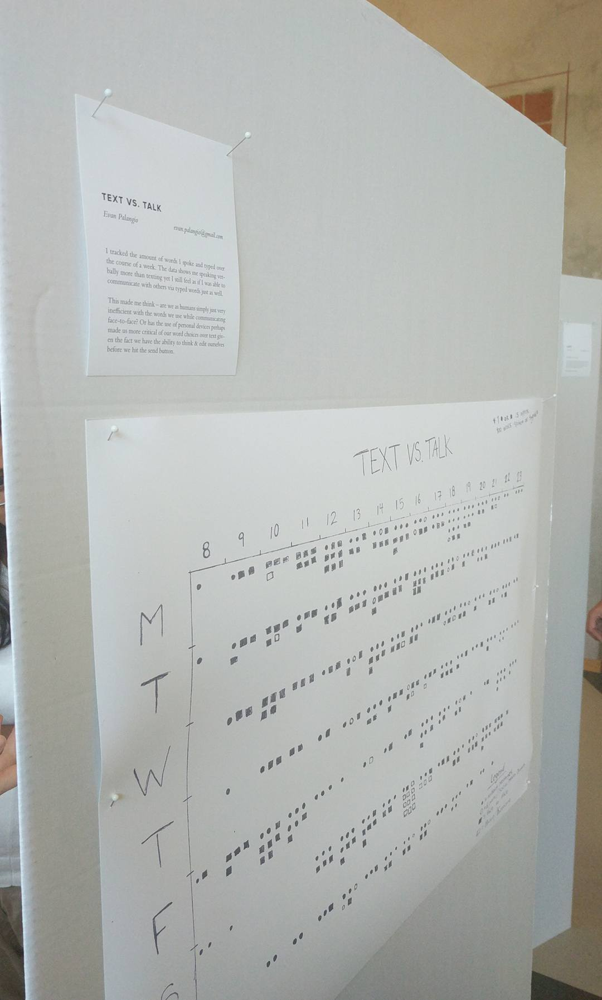

Text vs. Talk was the first assignment I completed during my Master’s program. The assignment was inspired by the book “Dear Data” which if you haven’t heard of before and you’re a bit of a data nerd like me, I implore you to go read it. The only instructions we were given for this assignment was to collect data from our own lives for one week and that the visualization must be hand drawn. Hand drawing has never truly been my strong suit but I digress.
As a 21 year old living in this digital age I find myself checking in on my virtual life more than my real life quite often. I thought it would be interesting to attempt to track the amount of words I actually spoke to people vs how many words I send to people via digital instant messages. I started by deciding exactly which information I was going to track since I knew this was going to be a difficult data set to collect accuratley.
I settled on 2 sets of data for each instance I wanted to track. I decided that “Talk” would include face-to-face conversation, phone calls and Facetimes while “Text” would include instant messages over any social media network, text messgaes and tweets or comments left by me on social media.
Evan Palangio
Linköping Sweden